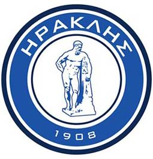
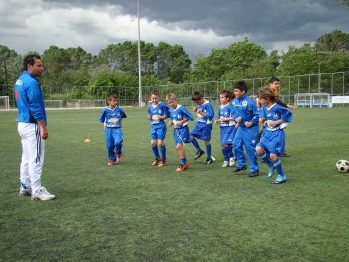
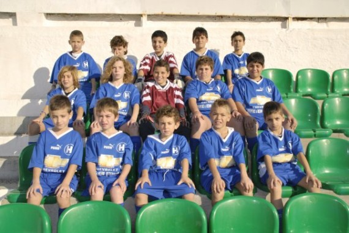
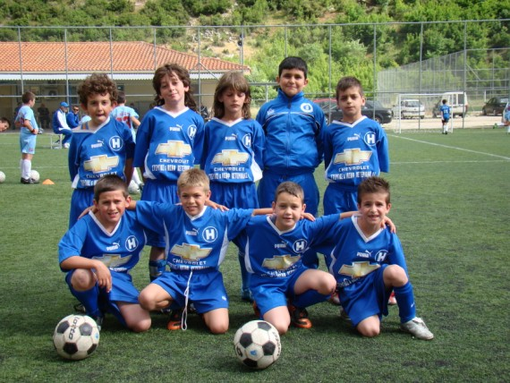
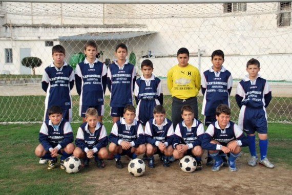
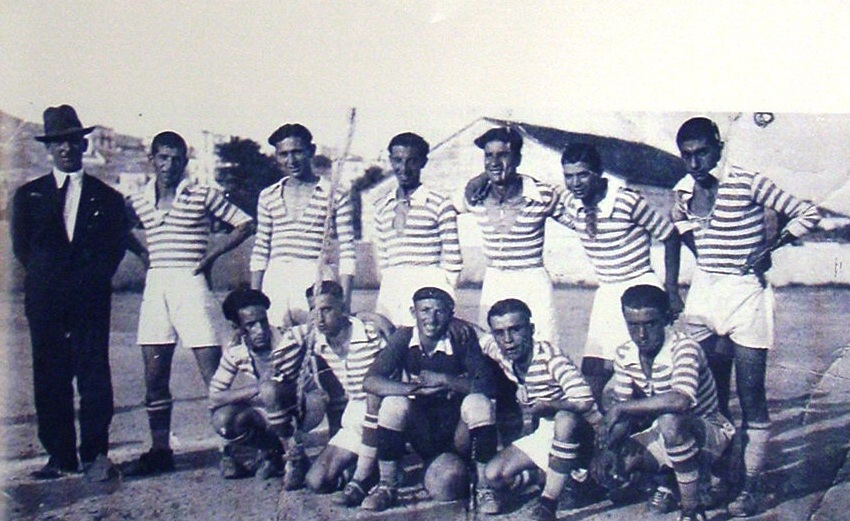

Μέχρι το 1922 ο κύριος αθλητικός σύλλογος της πόλης ήταν οι Φίλιπποι. Μετά τη Μικρασιατική Καταστροφή οι μικρασιάτες πρόσφυγες φέρνουν μαζί τους την αγάπη για τον αθλητισμό και ιδιαίτερα για το ποδόσφαιρο. Έτσι ιδρύθηκαν νέοι σύλλογοι:
Αφού ιδρύθηκαν, οι ομάδες που έπαιρναν μέρος μετά στο τοπικό πρωτάθλημα ήταν οι Φίλιπποι, η Α.Ε.Κ., ο Ηρακλής και ο Βύρων. Υπήρχε μεγάλη αντιπαλότητα μεταξύ τους λόγω των κοινωνικών αντιθέσεων που χώριζαν τα μέλη τους. Γίνονταν ακόμη αγώνες με πληρώματα πλοίων που προσέγγιζαν την Καβάλα. Οι ντόπιοι τους ρωτούσαν αν θέλουν να αναμετρηθούν μαζί τους σε έναν ποδοσφαιρικό αγώνα. Μετά το τέλος της αναμέτρησης, οι Φίλιπποι τους πρόσφεραν γεύμα.
Α' ΟΜΙΛΟΣ
1. ΗΡΑΚΛΗΣ ΚΑΒΑΛΑΣ 2. ΑΕΤΟΣ ΟΡΦΑΝΟΥ 3. Α.Σ ΠΑΓΓΑΙΟ 4. ΚΕΡΑΥΝΟΣ ΕΛΕΥΘΕΡΩΝ 5. ΗΡΑΚΛΗΣ ΜΥΡΤΟΦΥΤΟΥ 6. ΔΟΞΑ ΛΥΔΙΑΣ 7. ΑΡΗΣ ΖΥΓΟΥ 8. ΟΛΥΜΠΙΑΚΟΣ ΚΑΒΑΛΑΣ 9. ΑΣΠΙΔΑ ΠΟΛΥΣΤΥΛΟΥ 10. ΑΤΡΟΜΗΤΟΣ ΑΚΡΟΒΟΥΝΙΟΥ
B' ΟΜΙΛΟΣ
1. Α.Ο.ΦΙΛΙΠΠΟΙ ΚΑΒΑΛΑΣ 2. ΕΘΝΙΚΟΣ Ν.ΚΑΡΥΑΣ 3. ΑΟ ΠΟΤΑΜΙΑΣ 4. ΠΟΣΕΙΔΩΝ ΚΑΒΑΛΑΣ 5. ΜΑΙΑΝΔΡΟΣ ΓΕΡΟΝΤΑ 6. ΠΟΝΤΙΑΚΟΣ ΠΟΝΤΟΛΙΒΑΔΟΥ 7. ΑΡΗΣ ΚΕΧΡΟΚΑΜΠΟΥ 8. ΑΟ ΦΑΡΟΣ ΜΑΡΙΩΝ 9. ΚΕΡΑΥΝΟΣ ΚΑΛΛΙΡΑΧΗΣ 10. ΠΑΟ ΚΑΒΑΛΑΣ

"Η ΠΑΕ ΗΡΑΚΛΗΣ ΚΑΒΑΛΑΣ" θεωρεί ότι η ανάπτυξη του τομέα υποδομών
είναι μεγάλης σημασίας για τον σύλλογο
και μπορεί να αποφέρει σημαντικά, μακροπρόθεσμα οφέλη.
Στα πλαίσια, αφενός της αναδιάρθρωσης – αναδιοργάνωσης
των Ακαδημιών σύμφωνα με τα Ευρωπαϊκά Πρότυπα και αφετέρου,
συμπληρώνοντας 90 χρόνια Ακαδημίες ΗΡΑΚΛΗ,
προσδοκά την αθρόα προσέλευση παιδιών για
την χρονική περίοδο 2013 – 2014.
Κύριοι στόχοι του προγράμματος είναι:
  

Επισης για να ενημερώνεστε για τον τοπικο αθλητισμο δειτε εδω:kavala-sports